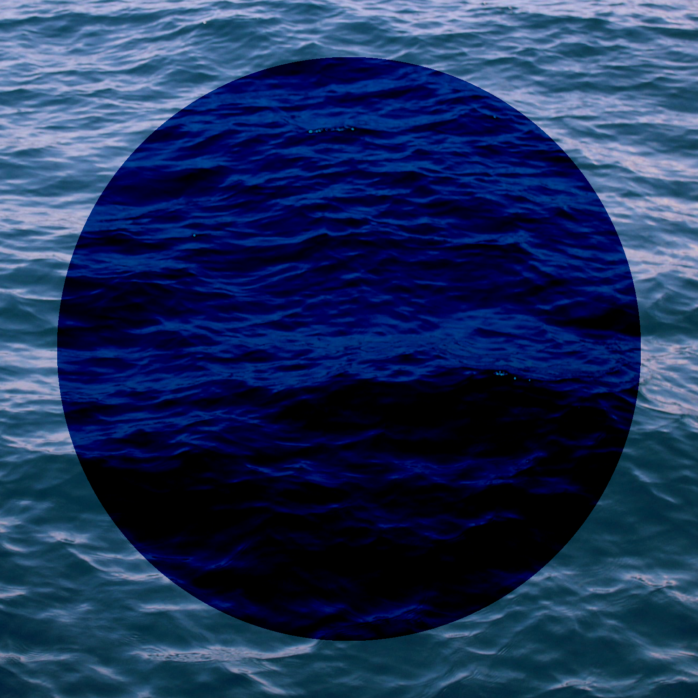
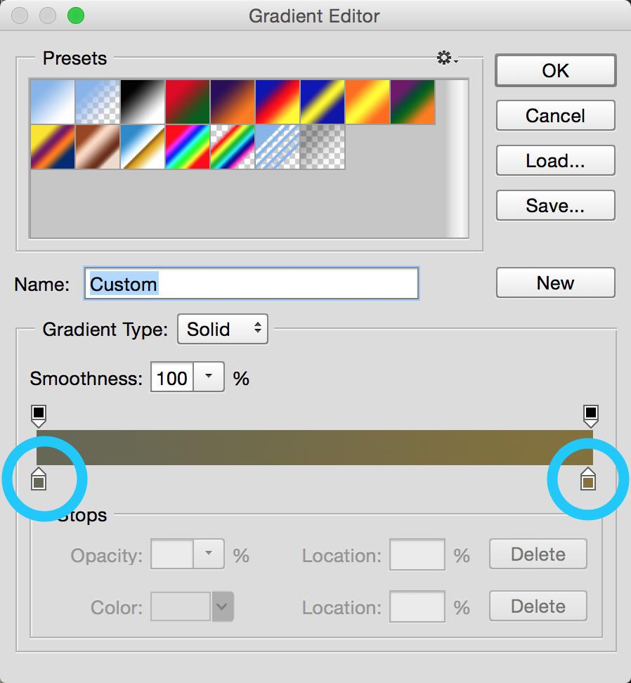

Photoshop 2
Special Effects
Introduction
Adobe Photoshop, a part of the Adobe Creative suite, is a powerful image editing and manipulation program. Used worldwide by professional photographers and designers, Photoshop is considered industry standard.
This class assumes you have completed our Photoshop 1 class, or have similar experience. We will assume you are familiar with Photoshop's interface, and have a basic understanding of its features. If you need to, you may always refer back to the Photoshop 1 manual for more information.
About this Class
In this class, our topic is filters and effects. We will be sampling a variety of creative tools and concepts in Photoshop, then will leave you to your own imagination to decide how to use them. These tools and features will act as a stepping stone towards creating the graphic or image you have imagined. We will spend time on the following topics:
-
Applying warping and molding techniques to images
-
Filters and lighting effects
-
Understanding and utilizing blending modes
-
Automating and batch processing images
Prerequisites and Requirements
Graphics Molding
Let's suppose that we are the owners of a design firm. A client requests their logo to be placed on coffee mugs to promote their brand. Before they purchase the mugs, they want to see a mock-up of what they may look like.
Using a combination of Photoshop's transformation tools and blending modes we are able to achieve a seamless product mock-up. These tools will mold and blend our client's logo onto a blank coffee mug.
Placing Objects
To begin this project, we first need to combine our mug and logo images into one file. To do this, we place an external file inside within our current document.
-
First, we will open an image of a blank mug. From the menu bar, choose File > Open. Navigate to the class files folder, then open mug.jpg, found under graphics-molding.
-
Next, we will add our logo. From the menu bar, choose File > Place Linked. Navigate to the class files folder and choose atomlogo.png under graphics-molding.
-
Click and drag the logo to position it in the center of the coffee mug. To resize the logo, hold the shift key, then click and drag on a corner of the image.
-
Once your changes are complete, confirm them by clicking the check mark at the top of the window, or by pressing enter on your keyboard.
In the layers panel, notice that Photoshop automatically created a new layer for the logo and named it using the image's file name. If you would like to change the name of the layer, double-click on the name. Finally, we would like to save our project as a Photoshop file, which you can do by going to File > Save As in the menu bar.
Warping Objects
Photoshop includes a variety of tools that allow you to subtly or drastically transform an object. Using Photoshop's transform tools we can further manipulate the logo to imitate the slight curve of the coffee mug.
-
From the menu bar, choose Edit > Transform > Warp. A grid with black squares (points) at the corners and black circles (control handles) along the edges will appear over the logo, as shown in the image on the right.
-
To warp the logo, click and drag individual points and control handles. Warp the logo to match the curvature of the mug.
-
When finished, confirm your changes by clicking the check mark icon, or by pressing enter on your keyboard.
Changing Blending Modes
To further integrate the logo into the coffee mug, we will remove its white background by changing its blending mode. Blending modes change that way that different layers interact with one another when overlapped. Typically, pixels on a top layer will simply cover up pixels on a layer below it. However, blending modes allow layers to interact more dynamically.
We will talk about blending modes in-depth later in this manual.
-
In the layers panel, select the layer containing our logo.
-
Click the blending modes drop-down, then select "Multiply".
The logo should now look like this:
Editing Linked Objects
When you place a linked object into a Photoshop document, Photoshop automatically creates a smart object layer. A smart object layer can be linked to an image file outside of Photoshop. A linked smart object is indicated by a small link symbol in the layers panel.
Among other features, a linked smart object allows you to make edits to the object, and have those edits appear in all files that contain that object. In this exercise, we will explore this feature of smart objects.
-
In the menu bar, choose File > Open, then open the logo image from the class files.
-
In the tools panel, select the quick selection tool.
-
In the brush options panel, change the size of the brush to about 60px. This way, the brush is slightly smaller than the circle in the center of the atom logo.
-
Click once on the black circle in the center of the atom logo to select it.
-
We will now fill our selection with a green color using the paint bucket tool.
-
Select the paint bucket tool from the toolbar.
-
In the options bar, make sure the fill source is set to "Foreground". When we use our paint bucket tool, it will now fill the selected area with our foreground color.
-
To change the foreground color, double-click the foreground color swatch near the bottom of the tools panel, then use the color picker to select a new color.
-
Use the paint bucket tool to change the color of the black circle in the center of our image.
Now that we've changed our original image, we can save it (File > Save) and return to our original project. Notice the changes we made to the atom logo are now visible in our project.
This dynamic linking feature is helpful if we use repeatedly use an image across multiple Photoshop projects. If we need to change the image in all of our Photoshop projects, all we need to do is edit the original image file, and it will update everywhere else.
Lighting Effects
Photoshop lighting effects allow you to add the appearance of additional light sources to your image. Lighting effects can be used to compensate for poor lighting, or to add a dramatic flair to a scene.
Adding a Point Light Source
In this exercise, we will make an image look more dramatic by adding a point light source.
-
Open the image sunset.jpg from the class files folder, under lighting-effects. Before making changes to the image, you may wish to save a copy as a Photoshop file, using File > Save As.
-
In the menu bar, choose Filter > Render > Lighting Effects. We are brought into a new interface, with new panels on the right-hand side of the screen.
In the properties panel, there is a drop-down menu to choose the type of light source we want to add to our image. Below is a brief explanation of each type of light source.
-
Point: Adds a light source as though it were shining toward a particular point in the image.
-
Spot: Adds a light source that only reveals a particular area of the image, similar to a spotlight on a stage.
-
Infinite: Adds a light source that equally lights the entire region of the image.
In the following example, we will be using a point light, however, feel free to experiment with all three on your own.
-
When opening the lighting effects interface, Photoshop will automatically add a light source to your image. At the top of the properties panel, make sure the type of light is set to "Point".
-
Now that we've added a light source, you will notice a large green circle, as well as a small black pin in the center of the circle. Move the light source by clicking and dragging the black pin.
-
Adjust the size of the slight source by clicking and dragging on the green circle. In our example, we placed the light source directly over the silhouette, and adjusted its size to encompass the upper-half of the figure.
In the properties panel, we have a series of settings to adjust the look and feel of our light source.
-
Color: Allows you to change the color of the light source. Double-clicking on the swatch will open a color picker window.
-
Intensity: Controls the brightness of the light source.
-
Colorize: Adds a color tint to the entire image, not just the lighting source. Double-clicking on the swatch will open a color picker.
-
Exposure: Refers to the amount of light in which a photo was taken. High values emulate bright lighting, low values emulate dim lighting.
-
Gloss and Metallic: Control the way that light appears to reflect off surfaces. In our example, these settings will have little effect.
-
Ambience: Controls the intensity of the tint selected in the colorize section.
In our example, we will change the settings to match those in the image to the right. Below is a comparison of our image, before and after lighting effects are applied. With a simple lighting effect, we are able to significantly change the mood of our image.
If we want, we can adjust our settings in the properties panel again to add a different effect to our image. In this case, we made our light source blue, and increased the gloss and metallic sliders. If you wish to try this for yourself, you may copy the settings in the image on the right.
When you're happy with your changes, click OK at in the options bar at the top of the window.
Adding Multiple Light Sources
While using the lighting effects interface, we can combine multiple light sources to create a more complex effect. In this exercise, we will be adding three spotlights to an image to give it the following effect:
-
From the class files folder, under lighting-effects, open gallery.jpg. Then, open the lighting effects interface by going to Filter > Render > Lighting Effects.
-
Photoshop will automatically add a single light source to your image. In the properties panel, change the type of light source to "Spot".
-
Position the light source to match the example in the image to the right.
-
Move the light by clicking and dragging the black pin to the center of the image.
-
Click and drag the handles on either side of the light source to adjust its width and height.
-
Rotate the light by hovering your cursor immediately outside of the handles, then click and drag.
-
Change the color, ambience, and other light properties in the properties panel to your liking. The settings we chose are displayed on the right.
-
In the options bar, there are three buttons that allow you to create additional light sources. Click the spotlight button to add a new spotlight.
You should now see two spot lights listed in the "Lights" panel, which can be found below the properties panel.
-
Select the second light, and using the same process as above, position it to mirror the first light. Once you have done this, adjust the light's properties to match the first light, except for the color. In our example, we gave our second spot light a blue color.
Your image should now look similar to the following:
-
Repeat this process once again to add a third spotlight in the center of the image, completing the effect. Once your are finished editing your photo, click OK in the options bar to confirm your changes.
Content-Aware Features
Content-awareness is an algorithm used in multiple Photoshop features. It analyzes detail in an image in order to make decisions about how to transform the image. In this section, we will explore two content-aware features: content-aware fill and content-aware scale.
Content-Aware Fill
Content-aware fill is used to remove objects from an image by filling in the unwanted area with content from the surrounding area. While this feature is impressive, it is not perfect, and works best in abstract or heavily patterned areas of an image.
Content-Aware Fill
Allows you to automatically fill in part of an image with content based on the texture and contents of surrounding areas.
Works best in areas of consistent pattern or texture.
With a selection made, use Edit > Fill, and select the Content-Aware option from the Contents dropdown.
-
Open canoe.jpg from the content-aware folder in the class files. If you'd like, you may save a copy of this image as a Photoshop file before continuing.
-
In the tools panel, select the lasso tool. Use the lasso tool to click and drag a loose selection around the red life-preserver and its shadow, as pictured below.
-
In the menu bar, go to Edit > Fill.
-
In the fill menu, make sure the contents of the fill is set to "Content-Aware". This way, Photoshop will know to fill the selected region using its content-aware algorithm.
-
Click OK. The red life preserver should disappear!
This Photoshop feature can be used a wide range of scenarios. If you're up for an extra challenge, see if you can make the entire canoe vanish using content-aware fill!
Content-Aware Scale
Content-Aware Scale allows you to re-size images disproportionately without distorting some of the important details. Content-aware scale attempts to find important parts of an image, such as people, and preserves proportionality in those elements, while allowing for distortion of less important elements, such as background textures.
-
Open state-street.jpg from the content-aware folder in our class files. If you'd like, you may save a copy of this document as a Photoshop file before continuing.
-
Be default, Photoshop places the image in a locked layer named "Background". In order to make changes, we first need to unlock the layer. In the layers panel, click the lock icon next to the background layer.
-
Go to the menu bar, and choose Edit > Content Aware Scale.
-
Click and drag the right and left sides of the image inward to make it narrower. As you re-size, some elements, such as the saxophone player and the stack of buckets remain proportional, while others, such as the sidewalk segments and doors become distorted.
-
When you are finished, select the check mark in the options bar, or press enter on your keyboard.
-
Notice that Photoshop does not re-size the canvas along with the image. You have scaled your image, but the document remains at its original size, potentially cutting of portions of your image or leaving areas of transparent pixels (indicated by the gray/white checkerboard pattern). To fix this, feel free to use the crop tool to remove excess space.
Advanced Warping
Photoshop has a series of advanced warping and transformation tools that allow you to change objects and shift perspectives within photos. In this section we will explore two tools, puppet warp and perspective warp.
Puppet Warp
Puppet warp is a Photoshop feature that allows you to manipulate joints and angles in photographs while keeping a sense of realism to the image.
-
Open the file named puppet-warp.psd from the class files folder, under advanced-warping.
-
Notice that this document contains two layers, one called "Puppet Warp" and one called "Background". Make sure that the "Puppet Warp" layer is selected.
-
Naviage to Edit > Puppet Warp in the menu bar.
-
In the options bar, deselect the option "Show Mesh". This will hide the mesh pattern overlaid on the image, making it easier to place warp points.
-
Notice that your cursor has turned into a pin icon. Click on the subject's body to add "pins" at joints, such as elbows, shoulders, knees, and hips. The pins act as place markers for pivoting the joints.
-
Click and drag the pin points to manipulate the structure of the body. To delete a pin, click the pin and press the delete key on your keyboard. You can add new pins at any time by clicking a spot that currently has no pins.
-
When you are finished manipulating your image, you may confirm the changes by clicking the check mark in the options bar, or by pressing the enter key on your keyboard. Note that once you apply a puppet warp, you cannot edit it, but you can re-warp the image.
Perspective Warp
Another advanced warping tool, perspective warp, allows you to easily adjust perspective in images. This feature works best for images with straight lines and flat surfaces, such as architectural images and photos of buildings.
In this exercise, we will be outlining the shape of a building, then using that outline to manipulate and distort the image.
-
In the class files folder, under advanced-warping, open building.jpg.
-
Navigate to Edit > Perspective Warp in the menu bar.
-
Click and drag on the image to create a rectangle. Once your rectangle has been created, click and drag the pins on each corner so that the rectangle covers one face of the building.
-
Click and drag to create a second rectangle that will cover- the other face of the building. When creating your second rectangle, it should automatically align itself with the first. For an example, see the image to the right.
-
Once you have finished outlining the building, change the mode from "Layout" to "Warp" in the options bar.
-
You may now click and drag each of the pins on the image to warp your perspective of the building. Take a few moments to explore the different possibilities when warping the building.
Depending on how you warped your building, there may be excess empty space in your image, like in the example pictured below. Empty space is represented by the white/gray checkerboard pattern in the background.
The following exercise is optional. To fill in the empty space of our image, we will be using the eraser and fill tools.
-
In the layers panel, create a new blank layer below the layer containing our building.
-
At the bottom of the tools panel are two swatches, representing the foreground color and background color. Double click on the swatch in front to change the foreground color.
-
When the color picker window opens, hover your mouse over the image. Your mouse will turn into an eye dropper, meaning you can click anywhere on the image to select a color. Pick a sky blue color by clicking on the sky in the image.
-
From the tools panel, select the fill tool. While the bottom layer is selected in the layers panel, click on the image to fill that layer with a blue background.
Notice that while the image no longer has empty space, there is now a noticeable line between the sky in the image, and the background fill layer we just created. We can blend the two layers together nicely using the eraser tool.
-
Select the eraser tool from the tools panel, and change its size and opacity under the brush options panel.
-
Change the opacity of the eraser from 100% to 35%
-
Change the size of the eraser to roughly 300px, and set the hardness near 30%
-
We are now ready to blend the image with our background layer. While the top layer is selected, carefully use the eraser along the edges of image, to blend the sky into our background layer.
-
Once you are satisfied with the results, click the check mark in the options bar to confirm your changes.
Here are two examples of two changes we made to our building using the perspective warp tool, after we filled in the empty space left behind from the warp. Your image should look similar to one of these:
Photographic Blur Gallery
The photographic blur gallery offers three customizable blur filters: iris blur, tilt-shift blur and field blur. Each of these filters is intended to digitally mimic an effect typically achieved in traditional photography through the use of special lenses or camera techniques.
Iris Blur
The iris blur applies an effect that starts with a sharp center and gradually blurs as you move toward the edges of an image. Iris blur is often used to enhance focus on objects in the foreground of an image, while blurring out objects in the background. In this exercise, we will explore the iris blur filter.
-
From the class files folder, open food.jpg, found under photo-blur. If you wish, you may save a copy of the file before continuing.
-
In the menu bar, navigate to Filter > Blur Gallery > Iris Blur.
The filter gallery panel should now open. In the center of your image, you will find what's called a blur pin. It is automatically placed at the center of your image. The blur pin is used to adjust the size, placement, and effect of the blur.
There are several components to a blur pin on your photo, each controlling different aspects of the blur. They are outlined below.
-
The bull's eye at the center of the pin defines the area of sharpest focus.
-
The black and white ring around the bull's eye, called the blur handle, adjusts the size of the blur.
-
The gray oval that encloses the blur pin defines the blur area, the boundary line where the image becomes fully blurred.
-
The white circles around the blur handle define the fade area, which is the transition between the sharp and completely blurred portions of the image.
Now that we understand the interface for modifying a blur effect, let's use it to change our image.
-
Click and drag the bull's eye of the pin to adjust the focus point on a specific item in the photo.
-
Click and drag the blur handle clockwise to increase the size of the blur.
-
Hover over the gray oval until a double ended arrow appears, then click and drag the oval outward to expand the blur area boundary.
-
Click on one of the inner white circles, and drag outwards to expand the fade area, creating a more subtle transition.
-
When you're satisfied, confirm your changes by clicking OK at the top of the blur gallery panel.
Field Blur
The field blur filter allows you to build a custom blur effect by defining multiple blur points across an image with different blur settings. The approach produces a sophisticated matrix of adjustable blur/sharpness areas which can easily be tweaked and adjusted.
In this exercise, we will be adding multiple blur pins to our image, and adjusting each one individually.
-
From the class files folder, open terrace.jpg, found under photo-blur. If you wish, you may save a copy of the file before continuing.
-
In the menu bar, go to Filter > Blur Gallery > Field Blur.
-
When the blur gallery opens, you'll notice Photoshop automatically places a blur pin in the center of the image. However, as we learned in the previous exercise, blur pins can be moved. Click the bull's eye in the center of the blur pin and drag to place it near the left edge of the image.
-
Click and drag the blur handle to increase the amount of blur for this pin. In our example, we are increasing the blur to about 40px. Alternatively, in the blur tools panel you can type "40" into the blur field.
As of now, there is only one blur pin, meaning the blur will affect the entire image evenly. We can modify the blur effect for different parts of our image by adding more blur pins.
-
Hover over the image and notice that your cursor appears as a pin icon. This means Photoshop is ready to place additional blur pins when you click. Click on the face of the subject to place another blur pin.
-
To bring the subject's face into sharp focus, set the blur amount for this pin to 0px. You can do this by clicking and dragging the blur handle, or typing the value into the blur tools panel on the right.
-
The transition between our first and second blur pins is not very smooth. To fix this, click to add a pin halfway between the two existing pins. Set the blur amount for this pin to 25px.
-
Practice adding new blur pins and edit existing pins to see what effects you can create on the image. To select an existing blur pin, simply click the bull's eye in the center of the pin.
-
When you're satisfied, confirm your changes by clicking OK at the top of the blur gallery panel.
Tilt-Shift Blur
In photography, a tilt-shift lens is used to manipulate the perspective depth and angle in an image. This technique can produce a range of effects, but it is often used to make a landscape scene appear "miniaturized." The effect of a tilt-shift lens can be mimicked using the tilt-shift blur filter.
In the following exercise we will practice adding a tilt-shift blur to a photo.
-
From the class files folder, open beach.jpg, found under photo-blug. If you wish, you may save a copy of the file before continuing.
-
In the menu bar, navigate to Filter > Blur Gallery > Tilt-Shift.
-
As in the previous blur exercises, Photoshop automatically places a blur pin in the center of the image. Click and drag the blur pin towards the top of the photo, near the swimmers.
Our goal will be to make the horizon appear in sharp focus, with the foreground becoming blurred towards the bottom of the photo. The tilt-shift blur pins have a slightly different interface than the blur pins we've used before. The different blur areas are outlined in the diagram below.
-
Adjust the size of the sharp area, by clicking and dragging on the solid lines immediately above and below the bull's eye until you get the desired result.
-
Next, we'll change the angle of the blur. Hover over one of the white circles on the fade area boundy lines until a curved, double-ended arrow appears. Click and drag to rotate the blur, and match it to the angle of the horizon in the image.
-
Set the blur amount for this pin by dragging the blur handle or typing the value into the blur tools panel on the right.
-
Click and drag each of the dashed lines toward the bull's eye slightly to expand the blur area.
-
When you're satisfied, confirm your changes by clicking "OK" at the top of the blur gallery panel.
Congratulations on completing the section about blurs! Here is the photo, before and after our blur filter is applied:
As you can tell, the blur effect is subtle. While editing photos, always make sure your effects are nonobvious and don't dramatically distract the viewer. In this example, our goal was gently draw the viewer's attention to the top of the photo, but the blur itself is not distracting.
Blending Modes
What Are Blending Modes?
Blending modes are a powerful Photoshop tool which allow us to determine the way two layers interact, using different mathematical calculations. Before jumping into the use of blending modes, we want to quickly review how layers work. Take a look at the image below.
In the image above, we see an orange circle resting atop a photo of the ocean. We can assume that the circle and the picture are on two separate layers. The circle seems to be on the top layer, because it is covering up the image of the ocean below. If we were to separate the layers, and look at them from a different angle, it could look something like this:
As we can see, the layers stack on top of each other, and by default, the top layer will automatically cover up the bottom layer. By changing the blending mode of the top layer, it can interact with the bottom layer in a variety of ways. Let's look at some examples.
Example of "Color" (left) and "Subtract" (right) blending modes.
On the left, we used the "Color" blending mode, which takes the luminance of the base color (the blue of the ocean), and combines it with the hue/saturation of the blend color (the orange of the circle). On the right, we used the "Subtract" blending mode, which looks at the color information in each channel (red, green, blue) and subtracts the blend color from the base color.

Example of "Multiply" (left) and "Difference" (right) blending modes.
Above are two more examples of commonly used blending modes. For a full list of blending modes and their descriptions, see the blending modes glossary at the end of this manual.
Creating Custom Filters
Using our new understanding of blending modes, we are going to create a custom image filter that makes an image look vintage. Below is an example of our image, before and after our vintage filter is applied.
In this exercise, we will also be using a new tool, called the gradient tool.
Gradient Tool
Used to draw linear, radial, angular, reflected or diamond gradients. After customizing a gradient, a user can click and drag in the workspace to create a gradient on their image.
-
From the class files folder, open science-hall.jpg and texture.jpg.
-
By default, Photoshop will lock the layer containing our image. In the layers panel, unlock the bottom layer, then create a copy of it. To copy a layer, click and drag it into the new layer icon at the bottom of the layers panel.
-
While the top layer is selected, navigate to Filter > Filter Gallery in the menu bar.
-
In the filter gallery, select the "Charcoal" effect. Adjust the thickness to 1, set the detail to 5, and set the light/dark balance to 50, as seen in the image on the right. When you are finished, click OK to confirm the changes.
-
Change the blending mode of the top layer to "Soft Light".
We have now added and blended our first layer. Before finishing the effect, we will add one more layer to add texture, and one to add a vintage color tint.
-
From the menu bar, navigate to File > Place Embedded, and insert texture.jpg under the blending-modes folder. Resize the image to fill the entire workspace.
-
Change the opacity of the texture layer to 38%, and change the blending mode to "Pin Light". You should now have three layers in your layers panel, similar to the following:
To finish off the effect on our image, we're going to add a slight yellow tint to the image, by adding a color gradient and blending it.
-
Create a new layer in the layers panel, and place it above the other layers.
-
From the toolbar, select the gradient tool. (The gradient tool may be hidden under the paint bucket tool.)
Once the gradient tool has been selected, navigate to the options bar and click on the large swatch. This will open up the gradient editor.

-
Change the colors of the gradient by selecting the color swatches on either side of the gradient preview near the bottom of the window. In our example, we are using a gray and dark yellow color. Click OK once you're satisfied with your gradient.
-
Apply the gradient by clicking and dragging aross the empty layer that was just created.
-
Change the layer settings by setting the opacity to 45%, and blending mode to "Color".
We have now created a vintage filter for our image. Your photo should look similar to the example below. If we wanted to apply this filter to a separate image, we could follow the same procedure but with a different photo.
Optional: Actions
The next two sections of the manual will cover how to create automated actions and batch commands in Photoshop, and are optional to the course curriculum.
It's often necessary to repeat the same set of editing steps on multiple image files. For example, if you're editing photos for a website, you may need to resize and save the photos in a particular file format. This can become tedious when working with a large number of files. Fortunately, Photoshop offers an extremely helpful solution to this problem.
An action is a series of tasks that have been recorded to be "played back" on any number of files at once. Photoshop includes a number of pre-recorded actions, but you can also create your own. Actions can also be saved as separate files and easily exchanged, so many actions created by others are available for download online.
Creating Actions
To create an action, we need to record a series of editing steps that we apply to an image.
-
Open any previous image from the class files that you would like to use. In our example, we will be using fog.jpg.
-
Actions are managed through the action panel. To display the actions panel, navigate to Window > Actions.
-
By default, there is a folder in the actions panel called "Default Actions". To separate our own actions we will create a folder called "Custom Actions". Click the "create new set" icon in the bottom of the panel to create and name a new folder.
-
While the new custom actions folder is selected, click the "create new action" button at the bottom of the actions panel.
-
In the window that opens, choose a name for you action. Make sure "set" is set to "Custom Actions".
-
Finally, under "Function Key" you may optionally choose a key on your keyboard that will execute that action every time it is pressed.
When you're finished adjusting your settings, go ahead a click "Record".
Congratulations! You are now recording your first action. Every edit or change you make to the image in Photoshop is now being logged and recorded, until we choose to stop recording the action. Feel free to edit the image to your liking, using the tools and techniques we've learned in this manual. This can including cropping or resizing the image, re-coloring, adding blur effects, or creating a custom filter using blending modes.
Completing and Editing Actions
To stop recording the action, click the stop button at the bottom of the actions panel. We have now finished an action that can be applied to other images.
Notice that the actions panel displays each step that occurred during the recording. To review the settings applied in a step, click the triangle next to the step name. You can also re-order steps by clicking and dragging to change their position in the list.
Finally, you may delete steps by selecting them and clicking the trash can icon at the bottom of the actions panel.
Playing Actions
Once recorded, actions are "played back" in order to perform the recorded steps on a single file, or a group of files.
-
Open up a different image found in the class files folder.
-
With the actions panel open, select the new custom action you've created, then press the play button at the bottom of the actions panel. Photoshop will automatically perform the tasks included in the action.
Optional: Batch Processing
Suppose we need to apply this single action to multiple photos at once. In this case, playing the action on each individual file can be a tedious process. In this exercise, we will play back an action on a group of files using Photoshop's batch processing feature.
-
In the menu bar, navigate to File > Automate > Batch.
-
In the window that appear, under the "Play" section, choose the custom actions set we created before, then choose the action you would like to be performed.
-
The source section of the batch window specifies which files to perform the action on. Select "Choose", then pick a folder of images to apply the action to. In this case, will pick our actions-processing folder found in our class files.
-
The destination section of the batch window specifies where to save the finished files. Under the drop-down menu, select "Folder", then choose a destination folder for the finished files.
-
Click OK to play the action on all of the images within the folder you selected. When finished, navigate to the destination folder and confirm that the batch process has worked.
Blending Modes Glossary
Blending modes work most effectively if there are two or more layers of content. Essentially, blend modes are inputs and outputs. The top layer is the one that controls the output and the layers beneath are apart of the function of the output.
Below is a comprehensive list of blending modes and their functions, provided by Adobe on their official site. For more on how blending modes work, and examples of their usage, see the blending modes section of this manual.
Darken Modes
| Blending Mode |
Description |
| Darken |
Looks at the color information in each channel and selects the base or blend color—whichever is darker—as the result color. |
| Multiply |
Looks at the color information in each channel and multiplies the base color by the blend color. The result color is always a darker color. |
| Color Burn |
Looks at the color information in each channel and darkens the base color to reflect the blend color by increasing the contrast between the two. |
| Linear Burn |
Looks at the color information in each channel and darkens the base color to reflect the blend color by decreasing the brightness. |
Lighten Modes
| Blending Mode |
Description |
| Lighten |
Looks at the color information in each channel and selects the base or blend color—whichever is lighter—as the result color. |
| Screen |
Looks at each channel’s color information and multiplies the inverse of the blend and base colors. The result color is always a lighter color. |
| Color Dodge |
Looks at the color information in each channel and brightens the base color to reflect the blend color by decreasing contrast between the two. |
| Linear Dodge |
Looks at the color information in each channel and brightens the base color to reflect the blend color by increasing the brightness. |
Contrast Modes
| Blending Mode |
Description |
| Overlay |
Multiplies or screens the colors, depending on the base color. Patterns or colors overlay the existing pixels while preserving the highlights and shadows of the base color. The base color is not replaced, but mixed with the blend color to reflect the lightness or darkness of the original color. |
| Soft Light |
Darkens or lightens the colors, depending on the blend color. The effect is similar to shining a diffused spotlight on the image. If the blend color (light source) is lighter than 50% gray, the image is lightened as if it were dodged. If the blend color is darker than 50% gray, the image is darkened as if it were burned in. |
| Hard Light |
Multiplies or screens the colors, depending on the blend color. The effect is similar to shining a harsh spotlight on the image. If the blend color (light source) is lighter than 50% gray, the image is lightened, as if it were screened. This is useful for adding highlights to an image. If the blend color is darker than 50% gray, the image is darkened, as if it were multiplied. |
| Vivid Light |
Burns or dodges the colors by increasing or decreasing the contrast, depending on the blend color. If the blend color (light source) is lighter than 50% gray, the image is lightened by decreasing the contrast. If the blend color is darker than 50% gray, the image is darkened by increasing the contrast. |
| Linear Light |
Burns or dodges the colors by decreasing or increasing the brightness, depending on the blend color. If the blend color (light source) is lighter than 50% gray, the image is lightened by increasing the brightness. If the blend color is darker than 50% gray, the image is darkened by decreasing the brightness. |
| Pin Light |
Replaces the colors, depending on the blend color. If the blend color (light source) is lighter than 50% gray, pixels darker than the blend color are replaced, and pixels lighter than the blend color do not change. If the blend color is darker than 50% gray, pixels lighter than the blend color are replaced, and pixels darker than the blend color do not change. |
| Hard Mix |
Adds the red, green and blue channel values of the blend color to the RGB values of the base color. If the resulting sum for a channel is 255 or greater, it receives a value of 255; if less than 255, a value of 0. This changes all pixels to primary additive colors (red, green, or blue), white, or black. |
Comparative Modes
| Blending Mode |
Description |
| Difference |
Looks at the color information in each channel and subtracts either the blend color from the base color or the base color from the blend color, depending on which has the greater brightness value. |
| Exclusion |
Creates an effect similar to but lower in contrast than the Difference mode. |
Composite Modes
| Blending Mode |
Description |
| Hue |
Creates a result color with the luminance and saturation of the base color and the hue of the blend color. |
| Saturation |
Creates a result color with the luminance and hue of the base color and the saturation of the blend color. Painting with this mode in an area with no (0) saturation (gray) causes no change. |
| Color |
Creates a result color with the luminance of the base color and the hue and saturation of the blend color. |
| Luminosity |
Creates a result color with the hue and saturation of the base color and the luminance of the blend color. This mode creates the inverse effect of Color mode. |